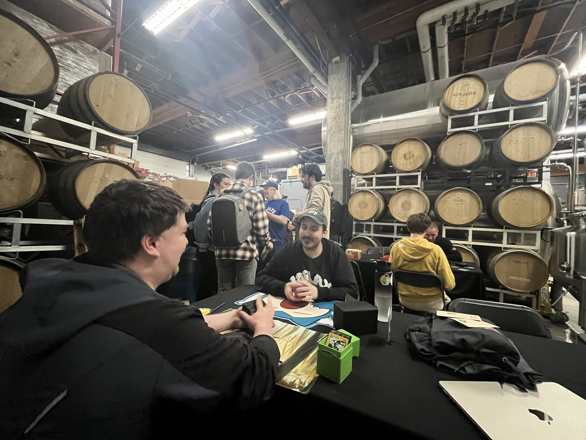
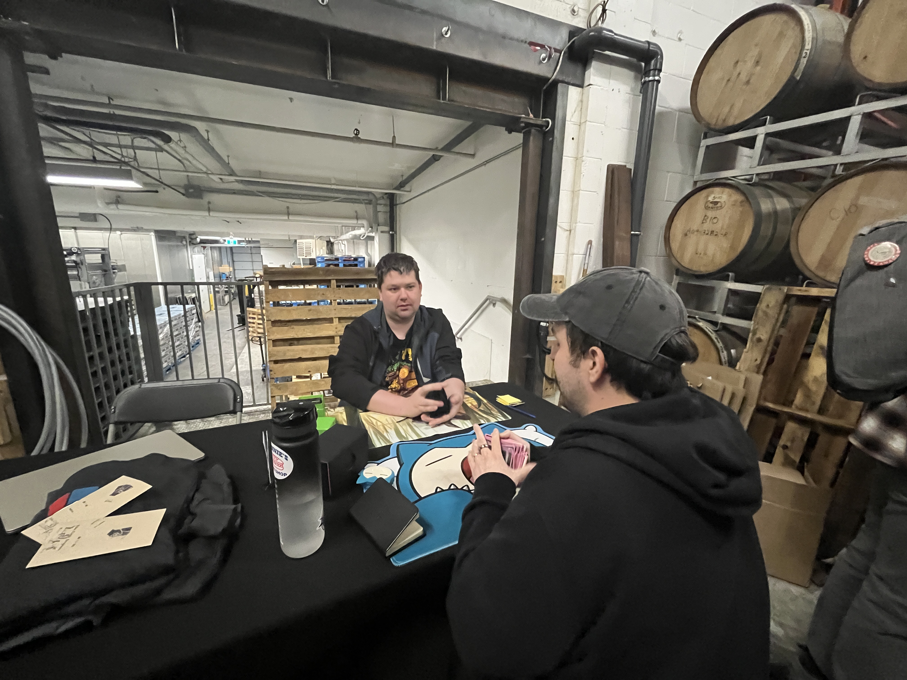
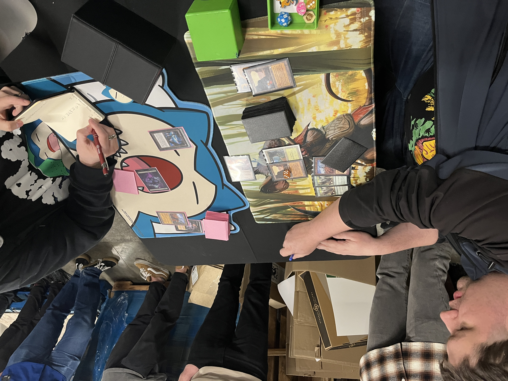
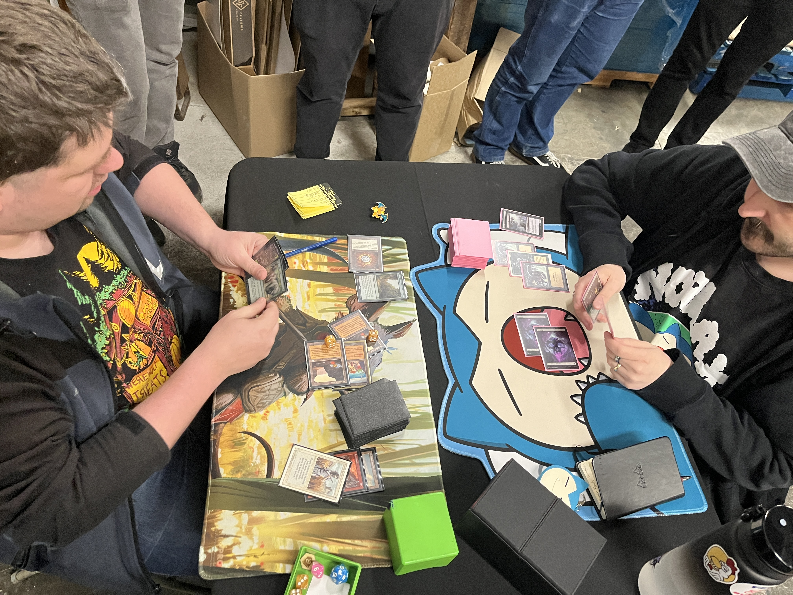

Both finalists had impressed through the day with their play.
Thibeau had started the tournament off with a win against Pro Tour veteran Aeo Alevizakis — whose 2004 Worlds Finalist playmat was raffled for charity as part of the event — and then after a Round 2 loss, had rallied through to the Top 8, where he fought and clawed for every percentage point.
Whitwell had been at the top tables all day, comfortably gliding into the Top 8 at 4–0–1. Match after match the same play pattern emerged — some light attrition, some Port interference, then one unanswered Elephant, and then another, sometimes with an Armageddon, and then the game was over. His red splash for sideboard Pyroclasms and Pyroblasts allowed the deck to cover a lot of bases.

Game 1 —

Whitwell mulligans. Thibeau keeps.
Whitwell leads fetchland into Mongoose. Thibeau replies with Cursed Scroll. Land, attack, go.
Land, Therapy on Terravore: whiff, but sees two Call of the Herds. Then Knight of Stromgald — sac it, flashback the Therapy.
Land, attack, Mox Diamond, Flashback Call. Then on the next turn, Flashback the other Call.
Thibeau has two Scrolls and a Factory, but 13 life turns to 10, turns to 4…
+3 Dystopia · +1 Knight of Stromgald · +1 Powder Keg · +1 Gloom
Game 2 —
Thibeau mulligans to 6. Leads Swamp.
Whitwell leads land, Mox Diamond.
Thibeau plays Swamp.
Whitwell plays Call of the Herd; Thibeau Edicts.
Thibeau plays Hypnotic Spectre.
Whitwell plays Land, Swords Hypnotic Spectre, Flashback Call of the Herd.
Thibeau draws, Wastelands Whitwell's Port, and Smothers the Elephant. Back to parity.
Whitwell plays Sylvan Library. Thibeau responds with Dystopia — munching it during Upkeep.
Whitwell holds back on playing a fresh Call as Thibeau maintains the Dystopia for 2 now.
Thibeau drops a Knight of Stromgald.
The Dystopia is really holding up Whitwell, who — besides a Call of the Herd — is holding a Terravore and an Armageddon.
By the time Thibeau finally lets the Dystopia go — rather than pay 4 life — he drops a Nantuko Shade.
A Snuff Out on the ensuing Terravore means a fully-pumped Shade attack, and suddenly it's Thibeau's momentum that's gotten out of hand.
+3 Pyroclasm
Game 3 —
Whitwell mulligans… mulligans again. Thibeau keeps.
Whitwell leads Land, Mox, Sylvan Library — down to 1 card. Could his engine dodge Ritual Dystopia one time?
Thibeau plays Swamp, Ritual — Hypnotic Spectre. Whitwell does some rearranging, draws, Pyroclasm to clear the threat.
Thibeau plays second Swamp, second Ritual — Graveborn Muse. The other Black Necro.

But Whitwell has a Swords to Plowshares. He untaps, plays Call of the Herd, and suddenly he's ahead on board with a Fire // Ice still in hand. Had he turned the corner already, as he had so many times before?
Thibeau plays a Knight of Stromgald.
Whitwell flashes back Call. Attacks with the other. Thibeau attempts to block and pump with Mishra's Factory — Whitwell Fires it in response.
Thibeau plays a Hypnotic Spectre.
Whitwell plays a Terravore (4/4). Cracks with both Elephants for 6. Surely the momentum was becoming insurmountable?
He Ports a Swamp on Upkeep.
Thibeau plays a Snuff Out. Attacks with Knight, pumps it — puts Whitwell on 1 life.
1 life…? Where had all the life gone…?
That Necro. That darn Necro.
Thibeau Wastelands the Tranquil Thicket — and Whitwell's position finally collapses.